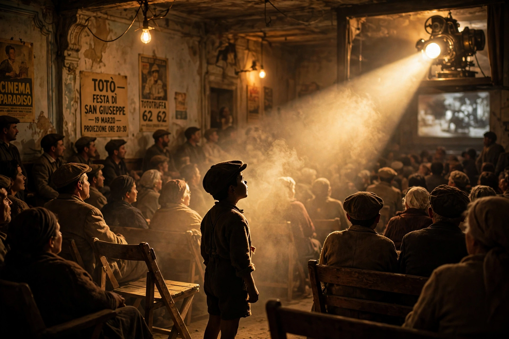

| Cinema Paradiso | |
|---|---|
 Totò and the projector beam | |
| Directed by | Giuseppe Tornatore |
| Written by | Giuseppe Tornatore |
| Starring | Philippe Noiret, Jacques Perrin, Salvatore Cascio |
| Music by | Ennio Morricone |
| Release date | 1988 |
| Country | Italy |
| Language | Italian (Sicilian) |
Cinema Paradiso (Italian: Nuovo Cinema Paradiso) is a 1988 Italian coming-of-age drama film written and directed by Giuseppe Tornatore. Told in flashback, it recalls the childhood of successful film director Salvatore Di Vita in his Sicilian village and his friendship with Alfredo, the projectionist at the local Cinema Paradiso. The film won the Grand Prix du Jury at the 1989 Cannes Film Festival and the Academy Award for Best Foreign Language Film.
In Rome, director Salvatore "Totò" Di Vita learns that Alfredo, the projectionist of his childhood, has died. Flashbacks trace young Totò's obsession with the village cinema, where the parish priest censors kissing scenes from films and Alfredo reluctantly teaches the boy projection. After a fire blinds Alfredo, Totò becomes the projectionist; as a teenager he falls in love with Elena, a banker's daughter, before leaving for military service and, urged by Alfredo, for Rome — with a promise never to return. Thirty years later he comes back for the funeral and watches a reel Alfredo left him: a montage of all the censored kisses, spliced together.
The film exists in several cuts: the original 155-minute Italian release, the 123-minute international version, and a 173-minute director's cut (2002) restoring Salvatore's reunion with Elena.
Initially a flop in Italy, Cinema Paradiso became a beloved international success and is frequently cited as one of the greatest films about the love of cinema.